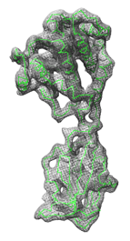

on the right
hides them again):
on the right
hides them again):
|  |
Fit in Map fits atomic coordinates into a density map or one density map into another. Local optima are found, not necessarily the global optimum. The maps usually represent electron density, but other types of volume data can also be used. See also: Values at Atom Positions, measure, molmap, sym
There are several ways to start Fit in Map, a tool in the Volume Data category (including from the Volume Viewer Tools menu).
The atomic structures and/or map(s) of interest should first be opened in Chimera. The fit model (atoms or map to fit) and reference map can then be chosen from the respective menus in the Fit in Map dialog. Prior to optimization, the fit model should be placed in a trial position relative to the reference map, close to what might be correct. This usually involves interactive manipulation and toggling models between active and immovable states. When atoms are fit, an entire molecule model or the currently selected atoms can be used.
Clicking Fit performs steepest-ascent local optimization of the fit (atoms-in-map or map-in-map) using the current options. The calculation will stop and the fit model will be repositioned after the earliest of:
Find Clashes/Contacts can be used to monitor for close contacts between atomic structures as they are moved, and atomic coordinates can be saved relative to the reference map.
Clicking Update gives the current atoms-in-map and/or map-in-map fit values without performing any fitting.
Clicking Results opens the Reply Log, which along with the fit values reports the number of steps taken and fit model displacement (translational shift and angle of rotation) since Fit was clicked. The transformation of the fit model relative to the reference map is described with a transformation matrix and as an axis of rotation (a unit vector), point on the axis, degrees of rotation, and shift parallel to the axis.
Clicking Options reveals additional settings
(clicking the close button on the right
hides them again):
The average map value at fit atom positions is maximized. For each atom within the bounds of the reference map, the map value is found by trilinear interpolation from the eight corners of the enclosing data grid cell. Atoms outside the bounds of the map are not used for computing averages.Map-in-map fitting:
Either the overlap or the correlation can be maximized. The calculation can include all nonzero-valued fit map grid points or only those with values above the map's lowest contour level in Volume Viewer (see options). The overlap is the sum over fit map grid points of the product of the fit map value and the reference map value at that point, determined by trilinear interpolation. It can be expressed as the inner product of vectors u and v containing the fit map values and the corresponding interpolated reference map values:overlap = <u,v>In similar notation,where uave is a vector with all components equal to the average of the components of u and vave is defined analogously. The correlation differs from the overlap in that an average value is first subtracted from each component, and further, the inner product of the resulting vectors is normalized by the lengths of those vectors. The correlation equals the cosine of the angle between the vectors (after subtraction of averages) and can range from –1 to 1, whereas the range of overlap values depends on the scaling of the maps.
<u–uave,v–vave> correlation = |u–uave||v–vave|
Close closes the Fit in Map dialog. Help opens this manual page in a browser window.
Optimization algorithm. If rotation and translation are both allowed, every even step is a translation and every odd step is a rotation. The center of rotation is the centroid (average position) of the fit atoms or the geometric center of the fit map grid points. The initial step size is chosen so that the largest displacement is 0.5 grid units, where a grid unit is the spacing between reference map grid points. If after four steps the maximum cumulative displacement is less than half the displacement achievable if all steps were in the same direction (e.g., half of 2.0 grid units = 1 grid unit), the step size is halved. Successive rounds of four steps with fixed step size and halving the step size based on the maximum displacement criterion are repeated until step size falls below 0.01 grid unit (convergence) or 100 steps have been taken. Map value gradients at atom positions or fit map points are calculated using trilinear interpolation of the gradients at the reference map points. Gradients at grid points are calculated by the center difference method. Atoms or fit map points outside the reference map or within one voxel of the edge of the data at a given step do not contribute to the optimal direction at that step.
Transformation matrices. The transformation matrix of the fit model relative to the reference map is reported in the Reply Log. The first three columns of the matrix describe a rotation and the fourth describes a translation (performed after the rotation). The transformation is also described as an axis of rotation (a unit vector), point on the axis, degrees of rotation, and shift parallel to the axis.
Comparing fits. Because local optima rather than a global optimum are found, it is often beneficial to explore and compare different fits. This can be done by opening multiple copies of the fit model and fitting them from different starting positions. The Model Panel can be used to hide and show individual copies. Different positions of atomic coordinates can be compared with the command rmsd.
Clipping and hiding are ignored. The calculation uses full maps even if partly hidden by clipping planes, zoning (with Surface Zone or zoning in Volume Viewer), or subregion selection in Volume Viewer.
Self-correlation ≠ 1. The correlation value of a map with itself in the same position should equal 1. However, in such cases, Fit in Map can report values much less than 1 because of floating-point rounding errors in grid point positions. Grid points at the boundary of a map can be found to lie outside the map, yielding interpolated values of 0.
Speed. Fitting 60,000 atoms using 76 steps takes about 15 seconds on a 2 GHz PC system (circa 2005). The time taken is proportional to the number of fit atoms or fit map grid points. Selecting just the CA atoms of a protein will allow substantially faster calculation than using all atoms. The optimization calculation is written partly in C++ for speed and partly in Python.